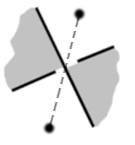

Supposez que vous tombez sur un entrelacs qui vous plaît comme celui-ci (bon d’accord, peut mieux faire, c’est un exemple, okay ?) :

Vous voulez le reproduire ou l’adapter à vos besoins. La meilleure façon de faire ça est d’en extraire le graphe sous-jacent. Pour celà, on commence par colorier en noir et blanc les régions que délimite votre entrelacs, comme dans un échiqier. Commencez par la grande zone externe puis, à chaque croisement, propagez la couleur noire de l’autre côté.
Vous obtenez le coloriage suivant :

Maintenant, vous construisez votre graphe en définissant ses sommets et ses arêtes. Placez un sommet au centre de chaque face blanche et tirez une arête au dessus de chaque croisement départageant deux zones noires.

Une fois que vous avez le graphe, il vous faut comparer chaque arête avec les deux guides, le plein et le tireté pour décider quel type de croisement c’est.
 |
ou bien |  |

Il faut que vous compreniez aussi comment les murs agissent au niveau du graphe, car vous pouvez très bien obtenir un graphe très compliqué qui est en fait basé sur un graphe très simple simplement perturbé par un mur ici, un mur là. Vous pouvez voir dans l’exemple suivant que fermer une porte revient à identifier les points extrémaux tandis que barrer une arête revient à l’effacer.


| Il ne faut pas hésiter | à rajouter des arêtes | « inutiles » qu’on barre ou ferme |
|
|
ou bien |
 |
Une fois que vous avez assimilé tout ça, vous pouvez l’utiliser pour construire de plus grandes figures à l’aide de l’encapsulation.